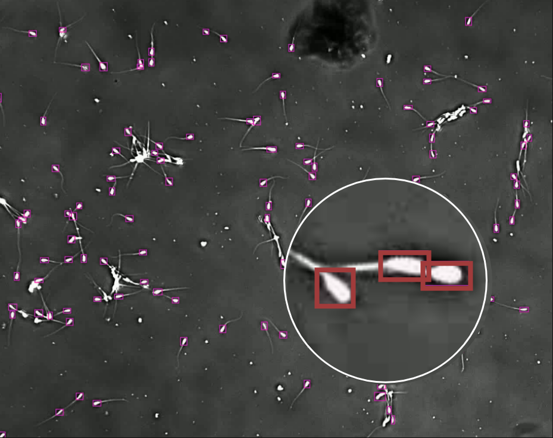
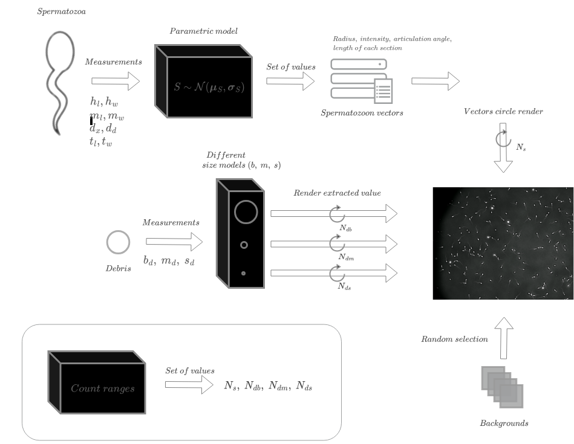

Synthetic image with zoom detail.

Labelling of real microscopic images.

Diagram of the rendering process.

Computer-Aided Sperm Analysis (CASA) systems play a critical role in diagnosing fertility issues. They are essential for treating infertility in humans and are equally valuable in the domain of domestic animal reproduction, where they support studies on sperm competition and wildlife semen assessment. However, a significant challenge is produced by the lack of publicly available datasets and the difficulties associated with sample labeling. In this paper, we propose a solution to address this challenge by introducing a synthetic data generation approach based on a parametric model. We demonstrate the effectiveness of our approach by successfully addressing two key sperm analysis tasks: sperm count and sperm motility assessment. Our proposed system utilizes synthetic data for training and is validated using real-world images from boar sperm. Experimental results obtained using a lightweight detection model show a mean average precision (mAP) of 84.3\%. Furthermore, the computational requirements of our solution are minimal, enabling its execution on embedded systems and facilitating its integration into professional CASA systems.
BibTex Code Here